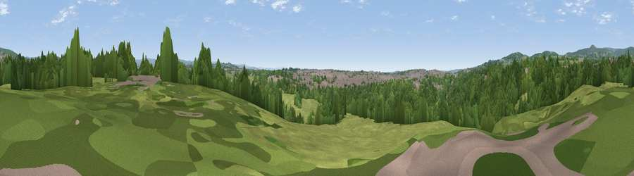

Viewpoint near Heywood
#39813 in England · top 93% of its area beats it · near Heywood · access?Where it is
The exact computed spot (SD 86325 11975). Click the marker for map links.
Public access: no public right of way or access land is recorded at this exact spot — it may be on private land. Computed from Natural England's CRoW access layer and OpenStreetMap rights of way — not the legal definitive map. Always verify locally.
The view, rendered

A 360° render of this exact spot computed from the terrain model, tree cover and land cover — summer colours, afternoon light, calibrated against photographs of famous viewpoints. Real trees, hedges and buildings will differ in detail.
The panorama
Grey silhouette: terrain skyline in each direction (720 bearings, Earth curvature and refraction included). Dashed green: skyline with trees (+15 m) and buildings (+8 m) as obstacles. Blue strip: how far the ground is visible on each bearing.
Where the view opens
Wedge length = distance to the farthest visible ground on that bearing (vegetation-aware). Rings at 10, 25 and 50 km.
What fills the view
52% woodland · 33% grassland · 14% built-up
Angular shares of the visible panorama (visual magnitude), not map area. Landscape diversity 0.44 (0–1 Shannon).
Key numbers
More beautiful places nearby
The staircase of upgrades: each row has a higher view potential than everything closer. Driving times are estimates from straight-line distance, calibrated against real road routing — check an actual route before setting out.
| Place | Direction | Drive | Score |
|---|---|---|---|
| Viewpoint near Norden | N · 2 km | ~6 min | 31.1 |
| Viewpoint near Castleton | SSE · 3 km | ~8 min | 47.0 |
| Viewpoint near Limefield | W · 4 km | ~8 min | 65.3 |
| Viewpoint near Limefield | WNW · 4 km | ~9 min | 71.0 |
| Viewpoint near Edenfield | NNW · 8 km | ~16 min | 77.5 |
| White Brow | W · 20 km | ~34 min | 82.9 |
| Warton Crag | NNW · 71 km | ~95 min | 83.2 |
| Viewpoint near Grange-over-Sands | NW · 81 km | ~105 min | 83.4 |
53.60416, -2.20813 · source: screening · position refined by local search. Computed location — check access rights before visiting.